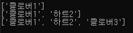

작성자:hyoryeon(2019.11~)
Hello everybody!!
이 사이트는 HTML 기초문법과 웹서버 구축을 공부하기 위해서 만들었습니다.
구축된 내용은 "파이썬 프로그래밍 공부하기"입니다.
- 파이썬 Tool 설치하기
- 숫자형 다루기
- 리스트 다루기
- 반복구조 다루기
- 조건 판단하기
- 조건으로 반복하기
- 튜플과 딕셔너리 활용하기
- 함수 사용하기
<리스트 다루기>
리스트 만들기
리스트는 기본 재료를 함께 모을 수 있는 자료형입니다.
[]와,를 사용해 리스트를 만듭니다.
값 추리하기
append()로 리스트에 값을 추가할 수 있습니다.

값에 접근하기
리스트의 각 값은 인덱스라는 주소를 가지고 있습니다.
인덱스로 원하는 값을 가져오거나 변경 할 수 있습니다.
이 방법을 인덱싱이라고 합니다.
값 제거하기
del 키워드로 특정 인덱스의 값을 제거할 수 있습니다.
여러 값 가져오기
여러 값을 잘라서 가져오는 것을 슬라이싱이라고 합니다.
[]와:을 사용하고 :을 사용하고 : 앞에 인덱스부터 뒤의 인덱스 바로 전까지의 값을 가져옵니다.
정렬하기
리스트를 쉽게 다룰 수 있게 도와주는 다양한 메소드가 있습니다.
sort()는 리스트 안의 값을 정렬합니다.
개수세기
count()는 리스트에서 해당 값의 개수를 셉니다.